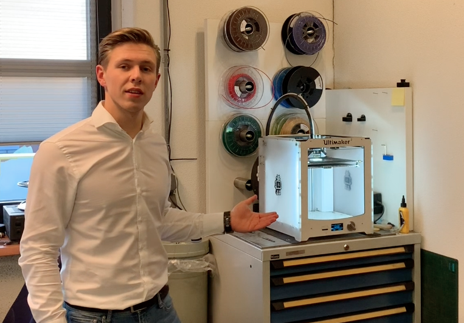

Portfolio Diquan Brugman
Welkom op mijn portfolio website. Op deze website zal ik alle ervaringen, opdrachten en ontwikkelingen tijdens de minor Smart Industry tonen.
Home
Opdrachten
Smart Start
Smart Business
Smart Connection
Smart Technology
Project ATAG
Competenties
Andere uitstapjes
Over mij
Contact gegevens
Diquan Brugman
Laat ik me even voorstellen!
Mijn naam is Diquan Brugman en ik ben een derdejaars student Technische Bedrijfskunde aan de Saxion Hogeschool in Deventer. Na een aantal interessante projecten en stages ben ik nu bezig met de minor Smart Industry. Wil je weten hoe dit project gaat of heb je nog een leuke stage voor mij? Klik dan even op mijn profiel hiernaast en schroom niet om een berichtje te sturen!
Naast studeren ben werk in als Teamleider Verkoopklaar bij Albert Heijn in Doetinchem. Mijn taak is het aansturen van een groep van rond de 20 medewerkers om met z'n alle een mooi resultaat neer te zetten. Ook denk ik mee over de koers van deze winkel en volg ik diverse trainingen om zelf beter te worden in het aansturen van mensen, het analyseren van bedrijfsresultaten en het communiceren met een bepaalde doelgroep. Erg leerzaam werk dus!
Ook sport ik erg graag. Ik Crossfit een aantal keer per week om fit te blijven en me lekker te voelen. Crossfit is een opkomende sport die bestaat uit een combinatie van gewichtheffen, gymnastics en conditie. In een uurtje train je met een groep van maximaal 12 mensen en push je elkaar tot het maximale resultaat!
Wil je meer over me weten of kunnen we iets voor elkaar betekenen? Doe me dan even een berichtje!
